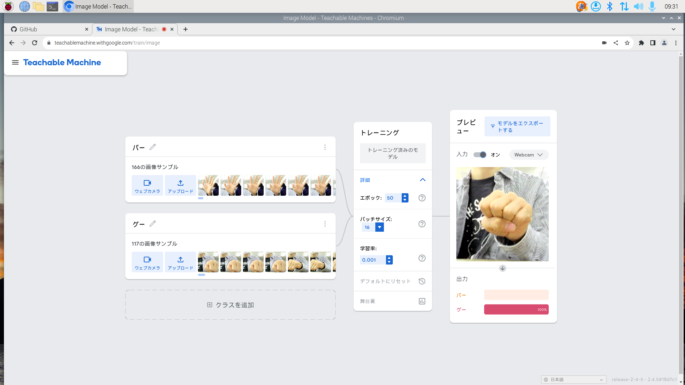

第2週目
2-2 機械学習体験

1.内容
TeatchableMachineというサイトを使用してwebカメラに写っているもの(今回は手のグーとパー)を判別するプログラムを作成した。
2.感想
webカメラの扱いに慣れてなかったのでグーやパーの手を読み込ませることが難しくて少し苦労しました。完成したプログラムで判別させてみたけれどなかなかうまく行かず、
実際はパーなのに100％グーと判断していることがよくあって、判別するプログラムはやはり簡単に作れるものではないんだなと思いました。今回実際にプログラムを作成（というほどではないが）
してみて、今様々な場所で活用されている判別プログラムの正確さとそれを淡々と作成していくプログラマの人たちの努力のふたつの凄さを実感したような気がしました
TeatchableMachineというサイトを使用してwebカメラに写っているもの(今回は手のグーとパー)を判別するプログラムを作成した。
2.感想
webカメラの扱いに慣れてなかったのでグーやパーの手を読み込ませることが難しくて少し苦労しました。完成したプログラムで判別させてみたけれどなかなかうまく行かず、
実際はパーなのに100％グーと判断していることがよくあって、判別するプログラムはやはり簡単に作れるものではないんだなと思いました。今回実際にプログラムを作成（というほどではないが）
してみて、今様々な場所で活用されている判別プログラムの正確さとそれを淡々と作成していくプログラマの人たちの努力のふたつの凄さを実感したような気がしました
2-3 JavaScript体験：３次元モデルのプログラムを作る

３次元モデル
1.内容
A-Flameのプログラムを使用して、仮想空間に球体や立方体、円柱などの3次元モデルを任意の場所に配置できるプログラムを書き込む練習をした。
2.感想 最初の方は3次元の仮想空間のカメラワークや移動に困っていたが慣れてくるとPCゲームみたいで少し楽しかった。3次元モデルの生成や移動（配置変更）に関しては、
自分が持っていきたい位置に移動させるための座標指定が思っていたよりシビアで、床的な場所にマス目があるわけでも、マウスで自由に移動させることが
できるわけではないので10分間では慣れてスラスラできるようには流石になりませんでした。でも、慣れることができたなら絶対楽しいと思うので家でちょっとやってみようかなと
思いました。
A-Flameのプログラムを使用して、仮想空間に球体や立方体、円柱などの3次元モデルを任意の場所に配置できるプログラムを書き込む練習をした。
2.感想 最初の方は3次元の仮想空間のカメラワークや移動に困っていたが慣れてくるとPCゲームみたいで少し楽しかった。3次元モデルの生成や移動（配置変更）に関しては、
自分が持っていきたい位置に移動させるための座標指定が思っていたよりシビアで、床的な場所にマス目があるわけでも、マウスで自由に移動させることが
できるわけではないので10分間では慣れてスラスラできるようには流石になりませんでした。でも、慣れることができたなら絶対楽しいと思うので家でちょっとやってみようかなと
思いました。